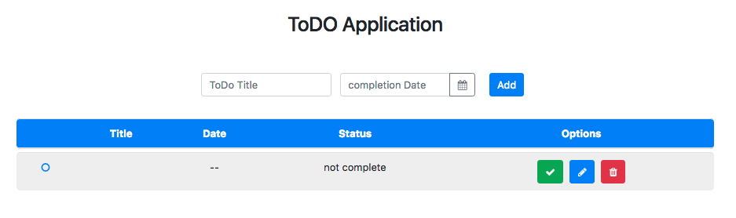
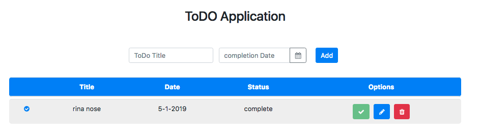
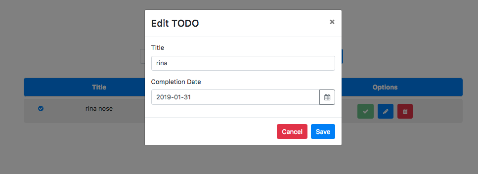
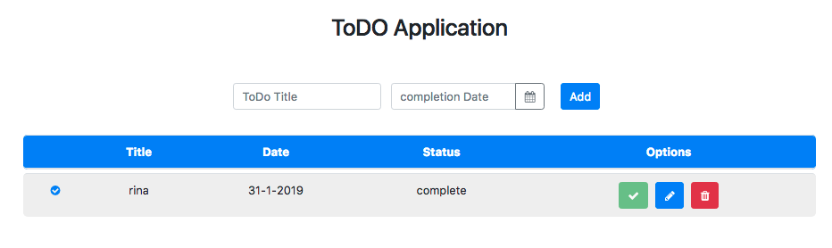

Kemampuan Akhir Yang Direncanakan
- Peserta mampu memperbaiki fungsi dari update
Percobaan memperbaiki fungsi dari update
jika kita lakukan proses save maka hasilnya akan seperti gambar berikut 
hal ini dikarenakan method update tidak berjalan dengan baik. Untuk itu lakukan beberapa step berikut ini
- buka fike app.component.ts modifikasi method initForm
import { Component } from '@angular/core';
import { Todo } from './class/todo';
import { TodoDataService } from './services/todo-data.service';
import { NgbModal } from '@ng-bootstrap/ng-bootstrap';
import { FormGroup, FormBuilder, Validators } from '@angular/forms';
import { Content } from '@angular/compiler/src/render3/r3_ast';
@Component({
selector: 'app-root',
templateUrl: './app.component.html',
styleUrls: ['./app.component.css']
})
export class AppComponent {
newTodo:Todo=new Todo();
editForm:FormGroup;
todo:any;
titleValue:string;
dateValue:string;
isEdited:boolean;
constructor(
private todoService:TodoDataService,
private modalService: NgbModal,
private fb:FormBuilder){}
get todos(){
return this.todoService.getAllTodos();
}
addTodo(){
// console.log(this.newTodo);
if(this.newTodo.title && this.newTodo.date){
this.todoService.addTodos(this.newTodo);
//cek isi new todo apakah berhasil
// console.log(this.newTodo);
this.newTodo= new Todo();
this.newTodo.title='';
this.newTodo.date='';
}
}
deleteTod(todo){
this.todoService.deleteTodoById(todo.id);
}
completeTodo(todo){
this.todoService.compoleteTodo(todo);
}
open(content,todo){
// console.log(todo);
this.isEdited=false;
this.initForm(todo);
this.todo={
id: todo.id,
title:todo.title,
date:todo.date,
complete:todo.complete
}
if(todo.date.year && todo.date.month){
// console.log(todo.date.year && todo.date.month);
this.titleValue=`${todo.title}` ;
this.dateValue=`${todo.date.day}-${todo.date.month}-${todo.date.year}`;
}
if(todo.date.year && !todo.date.month){
// console.log(todo.date.year && todo.date.month);
this.titleValue=`${todo.title}` ;
this.dateValue=`${todo.date}`;
}
this.modalService.open(content, {ariaLabelledBy: 'modal-basic-title'});
}
updateTodo(){
this.todoService.updateTodo(this.todo.id,this.editForm.value);
this.isEdited=true;
}
initForm(todo){
// this.editForm=this.fb.group({
// title:['',Validators.required],
// date:['',Validators.required]
// });
if(todo.date.year && todo.date.month){
this.editForm=this.fb.group({
title:[`${todo.title}`,Validators.required],
date:[`${todo.date.day}-${todo.date.month}-${todo.date.year}`,Validators.required]
});
}
if(todo.date.year && !todo.date.month){
this.editForm=this.fb.group({
title:[`${todo.title}`,Validators.required],
date:[`${todo.date}`,Validators.required]
});
}
}
}
- buka file app.component.html tambahkan code berikut
<td *ngIf="todo.date.year && todo.date.month">{{ todo.date.day }}-{{ todo.date.month }}-{{ todo.date.year }}</td>
<td *ngIf="todo.date && !todo.date.month">{{ todo.date}}</td>
- jika berhasil maka hasilnya seperti berikut   